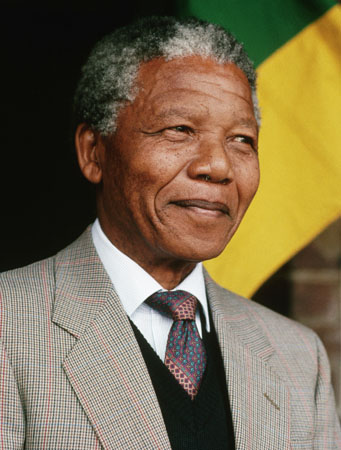
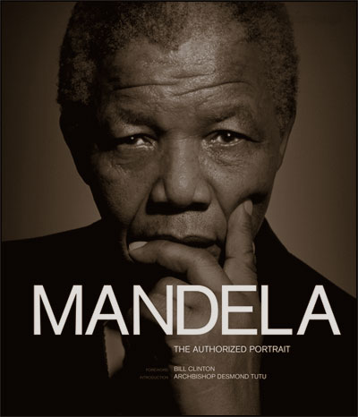
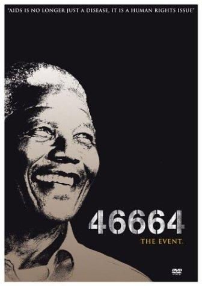
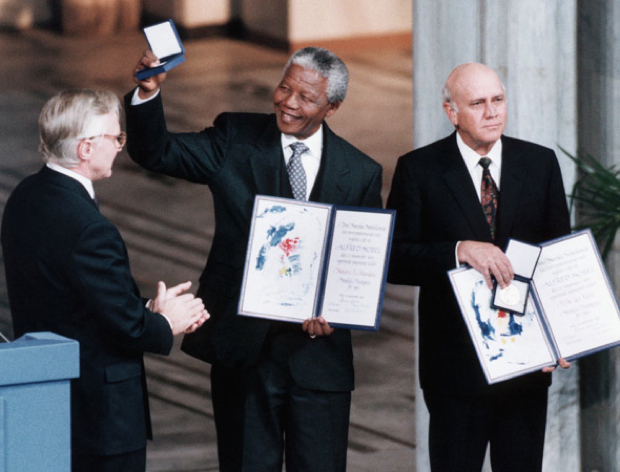
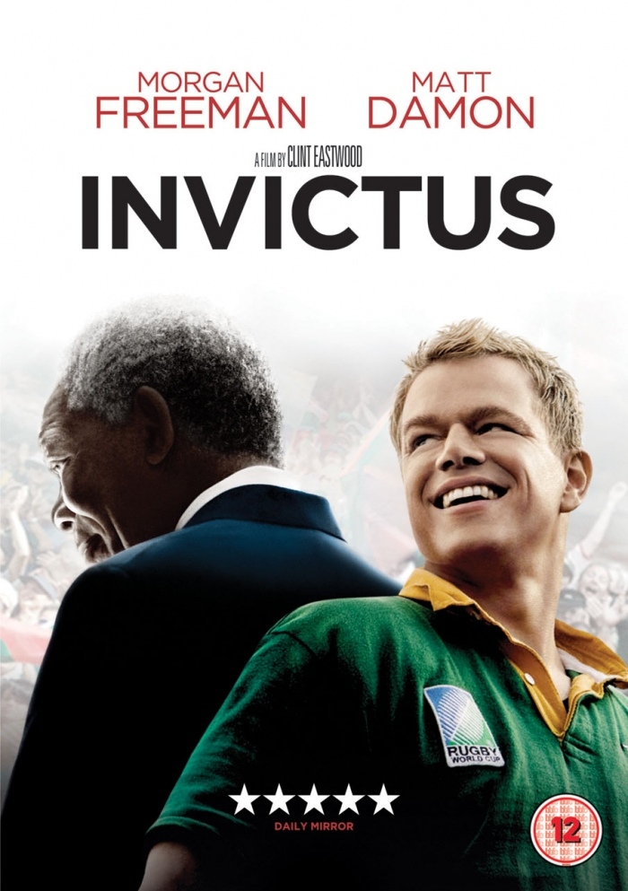
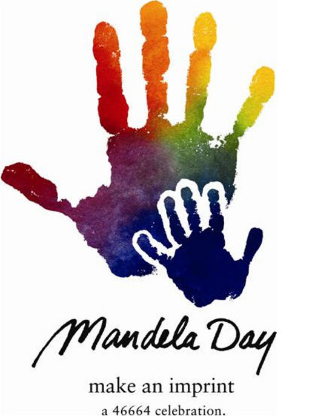

| Nelson Mandela nasce a Johannesburg, Mvezo, il 18 luglio 1918 e muore nel 5 dicembre 2013 in SudAfrica a Johannesburg |  |
| 46664 | Era il suo numero di matricola della veste che indossava quando fu in prigione |
| Premio Nobel | Vince il premio Nobel per la Pace nel 1993  |
| Invictus | Invictus è un film del 2009 diretto da Clint Eastwood ispirato a Nelson Mandela  |
| Mandela Day | Il Mandela Day è un giorno internazionale in onore di Nelson Mandela che avviene ogni anno il 18 luglio |
| Madiba | Madiba era il suo nome all'interno del clan Xhosa |
| Riconciliazione e Verità | E' una commisione incaricata di indagare e rivelare i crimini passati di un Governo con lo scopo di appianare i contrasti ancora in corso |